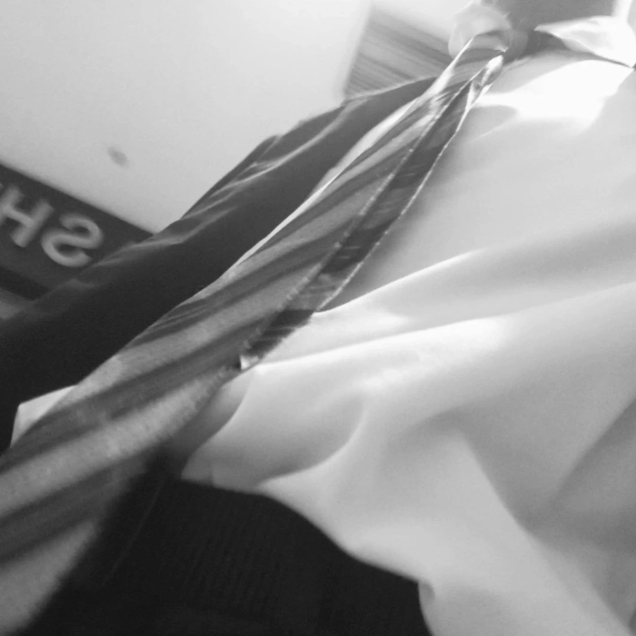
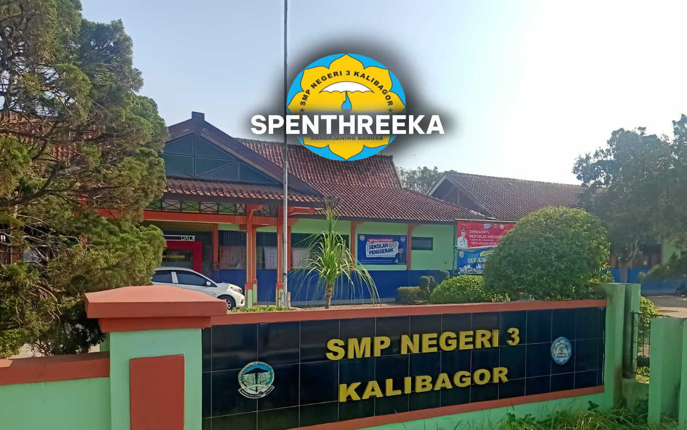
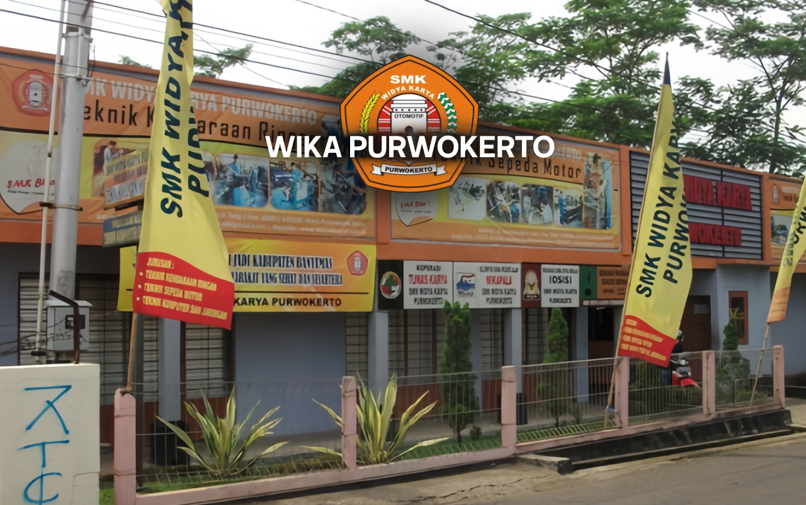
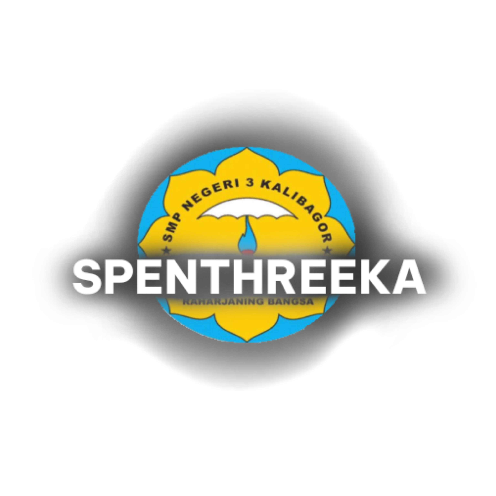

Born in 27th December 2010 at 11.00PM,
(Monday) Capricorn.
Hello! My name is Raafi Dimas Saputra (15y/o), oftenly called "Ryuú" by my online friends and called "Raafi" by my real life friends. I graduated from SMP Negeri 3 Kalibagor (Spenthreeka), and currently I'm plunging into the world of IT, still in progress of studying and trying to do better. I hope I can succeed not only by using logic, but also the drive of my imagination that continues to run, even though I have buried my desire to go to school as a designer.
If you can't look good, at least you have to have a good heart.



Class: VII-F, VIII-F, IX-F
Friends: +118
Inside school: 115
Outside school: 3
Extracurricular:
Karate
Bilingual English
(Quitted)
Organization joined:
OSIS
The least money ever:
Rp. 2.000
Daily pocket money:
Rp. 5.000
Most money ever:
Rp. 27.000
Exam grade gained:
Highest ever: 100 Informatics
Lowest ever: 50 Science
Fav subject:
Informatics
English
Hated subject:
Math